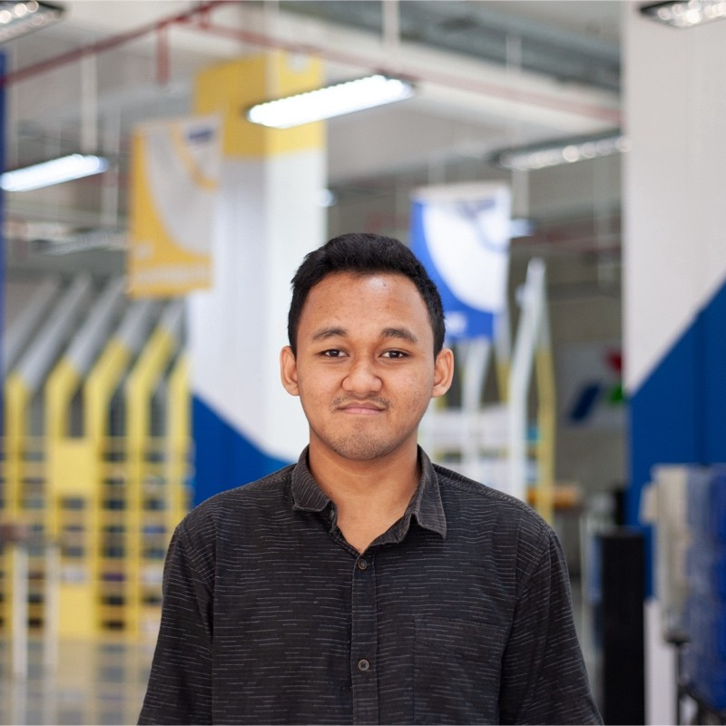

Muhammad Roland Maulana

Summary
A fresh Computer Engineering graduate from Universitas Indonesia with
strong technical skills, problem-solving abilities, and passion for
innovation. I am actively pursuing opportunities to utilize my expertise
in technology, contribute to innovations, and align my adaptability with
the organization's goals. My passion for excellence and commitment to
innovate make me a valuable asset in this dynamic industry.
Education
-
Universitas Indonesia - Computer Engineering with final GPA of 3.63
(2020 - 2024)
-
SMAN 1 Tambun Selatan - Mathematics and Natural Sciences (2017 - 2020)
Work Experience
-
Frontend Developer - Telkomsel
April - July 2023
- Manage and execute the improvements of the website’s frontend
-
Coordinate and schedule weekly meetings with internal stakeholders
- Create and compose the website documentation
- Analyze, examine, and solve the bugs on the website
-
Cloud Computing Cohort - Bangkit Academy led by Google, Tokopedia,
Gojek, & Traveloka
February - July 2023
-
Studied about cloud computing using top platforms such as Google
Cloud Skills Boost, Coursera, and Dicoding
-
Handled frontend developing and code deployments at the capstone
project (Journie)
-
Improved both English writing and speaking skills in the ILT EN
sessions with native speakers
-
Learned about project management, leadership, and some other soft
skills in the ILT SS sessions
Skills
-
Experienced in software development with programming languages such as
C, SQL, CSS, JavaScript, HTML, and many more
- Practiced in designing IoT systems
- Great knowledge of cloud computing
- Strong organizational and time-management skills
- Exceptional English speaking and writing skill
- Ability to work both independently and as part of a team
- Detail-oriented and able to handle multiple tasks simultaneously
- Interested to create innovations to help a lot of people
Projects
Others